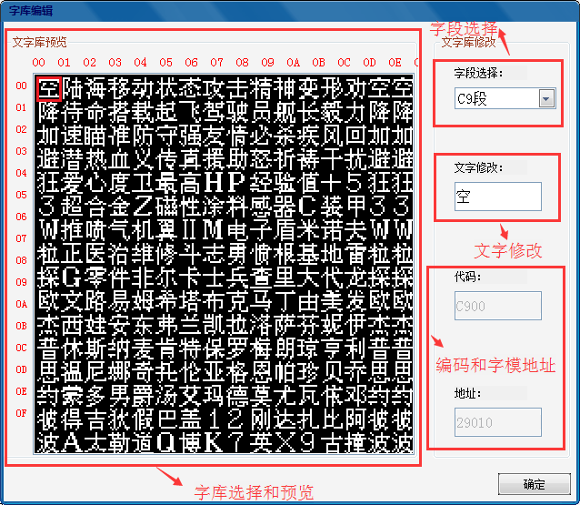
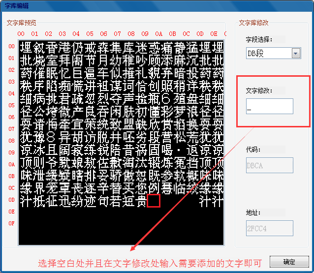

功能区域分布：（注意-添加或者更改字库后请重新打开ROM之后再更改剧情文字或者机体人物名称才可生效！）

1.字库说明：字库即游戏的字典，游戏中所有的文字必须是字库中所拥有的才可以使用。这是对于原版中12*12的字模而言的，8*8和16*16的字模除外，另作处理。
2.修改说明：通过鼠标选中相应的文字，可以在代码和地址一栏中看到相应的编码和字模地址数据，编码即对应文字的编号，游戏通过这个编码索引对应的字模地址读取字模进行转换之后在游戏中显示。如果要修改字库，选中相应的文字之后，输入需要更改的文字，即可对字库进行修改。需要注意的是，每一行的第一个字和最后两个字是必须相同的（这个是由程序决定的，不能改变）。所以一页字库的字库量是16*16-16*2=224。原版一共为6页字库，可以选择字段对其他字库页中的文字进行修改，修改方法同上。对于字库中的空白部分，我们可以直接输入需要的文字，即可添加新的文字，如下图所示：
